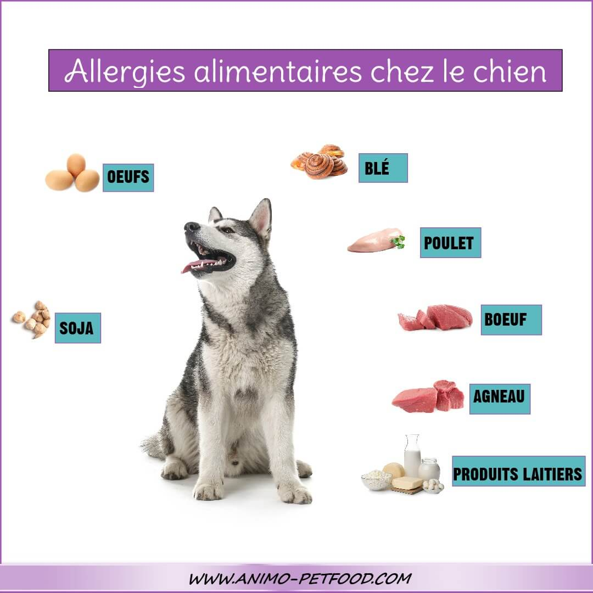

Les chiens ne sont pas à 100 % carnivores mais plutôt des omnivores ayant un besoin marqué de protéines animales. Une alimentation saine comporte : de la viande cuite (par exemple : poulet, agneau ou bœuf) une petite quantité d’ingrédients végétaux pas ou peu de conservateurs et d’exhausteurs de goût pas de produits laitiers (beaucoup de chiens sont intolérants au lactose). Vous voyez notamment à son pelage, qui a l’air brillant et en bonne santé, que votre chien reçoit une alimentation saine.
Il existe une large gamme d’aliments pour chien : les aliments secs, les aliments humides et les aliments sur lesquels vous devez verser de l’eau chaude avant de pouvoir les manger (« dîner »). Bien que chaque type d’aliment ait ses avantages et ses inconvénients, les aliments secs sont la meilleure solution pour la plupart des chiens. Les morceaux les obligent à mastiquer, ce qui est bon pour leurs dents. Par ailleurs, les aliments secs ont le pourcentage d’humidité le plus faible, ce qui augmente leur durée de conservation. Si vous optez pour cette alimentation, veillez à ce que votre chien dispose d’eau en quantité suffisante. Votre choix d’alimentation sera guidé par la race et l’âge de votre chien. Lorsque vous ramenez le chiot à la maison, donnez-lui une alimentation identique à celle qu’il recevait chez l’éleveur. Dès qu’il est habitué à son nouvel environnement, mélangez pendant quatre jours sa nouvelle alimentation à ses aliments habituels. Si le chiot ne montre aucun symptôme d’allergie, passez à la transition définitive. Si votre chien souffre d’une pathologie spécifique, veillez toujours à lui donner l’alimentation adaptée. Pensez notamment aux chiens qui souffrent d'arthrose, de maladies rénales ou d’obésité. Et enfin, il y a bien entendu les fins gourmets qui manifestent une préférence claire.
Ne surchargez pas trop l’estomac et les intestins de votre chien en divisant son alimentation en différentes portions. Donnez à votre chien adulte deux portions égales par jour, le matin et le soir. Au début, les chiots mangent quatre fois par jour. Passez ensuite à deux rations dès la puberté. La quantité de nourriture dont votre chien a besoin dépend de son âge, de son poids et de l’exercice qu’il pratique quotidiennement. Vous trouverez les quantités recommandées sur les emballages de nourriture. Pesez régulièrement votre chien, son poids vous indique s’il ingurgite la quantité exacte de nourriture.
Lorsqu’il a fini de manger, laissez votre chien se reposer pendant au moins une heure. Si vous allez le promener et le faire courir directement, il risque une torsion d’estomac : une pathologie mortelle qui touche surtout les grandes races. Dans ce cas, l’estomac pivote sur son axe et se dilate. Les symptômes d’une torsion d’estomac sont notamment la bave, l’agitation, les vomissements, une tension au niveau du ventre, une respiration accélérée et des muqueuses pâles. Si vous constatez ces symptômes, prenez contact avec votre vétérinaire dans les plus brefs délais.
